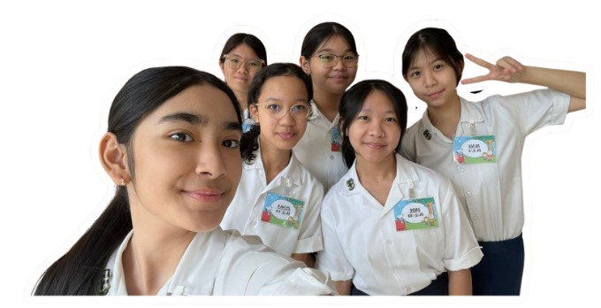
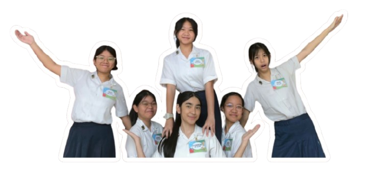
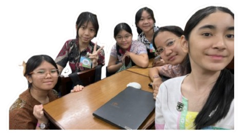

For our big Integrated Learning project, we were assigned to make a booth and sell products in the school bazaar. This project was themed as Nusantara, which represents Indonesian culture. First the teammates were given out to each group by the teachers. This project was designed to teach students the sense of responsibility, preciseness and increase communication between teammates. Inspired by the legend of Gatotkaca from Javanese shadow plays. We took parts of his stories and input them as little details of decoration in our booths. The ideas were formed and pieced together by our group members. The vast majority of us decided to choose mostly food and beverage products for our stands such as our sandwich, boba drinks, and sodas. The recipes and ingredients were all prepared by our members.
We also carefully constructed the idea of what the booth would look like through sketches and recommendations. The dough for our sandwich was hand made and taste tested by us. The logo for our booth was changed and refined multiple times by us. For our biotech product we chose to make bread, and we consulted experienced people to find out the ingredients and recipe for our biotech. Our prototype products were tested by our close friends and family to give opinions and perfect our final products. We moved on to sewing our products and consulted with the teacher to finalize our bow clip called Wayang’s Elegance taking inspiration from Gatotkaca’s story. Before we mass produced this product, a prototype was made by one of our members to test out the pattern and techniques and in the end it worked beautifully. The reason we chose all our products specifically for this project is because it really fit into the theme of our stand and IL and it was also cost efficient for us. For the design of the booth, we first started with a simple sketch of the booth and how it would look in general. The cardboard was brought by some of our members and the school for us to use in decorating the booth. We bought the ideal paint colors for the booth and cut out the cardboard into pieces such as wings, shields, tigers and temples. The different pieces of decorations were painted to each of their colors by us.In the meantime some of us split up to make the advertisements and the instagram account for our booth. The booth, products and advertisements were developed over a period of 5-6 months. Everything went well as there were no arguments.
We faced many challenges, the most common one being that most of our members couldn't make it to some of our group meetups. So information about products reached some of our members really late. The packaging was bought by one of our members. Since she got the information late, the order for the packaging was delayed and ended up arriving on the day of the bazaar. We ended up finishing with the packaging just in time right before the bazaar started.
A lesson from this Integrated Learning project is that teamwork and collaboration are crucial to the success of our project. We learned that managing a schedule and time is very important to manage all of our products, decorations, advertisements and meetups. Not only that but communication also plays an important role for our project, many of our orders and information would be missed or either late which can delay the process of making our booth. I say in the end that everything went smoothly and we found many solutions to our problems.